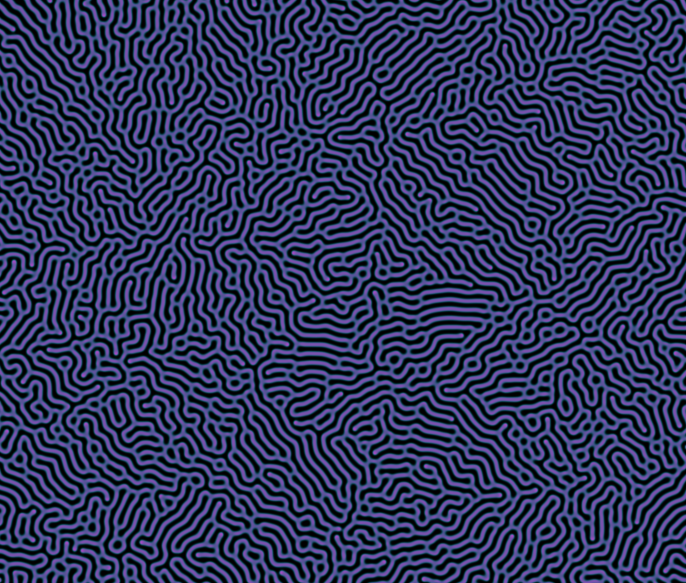
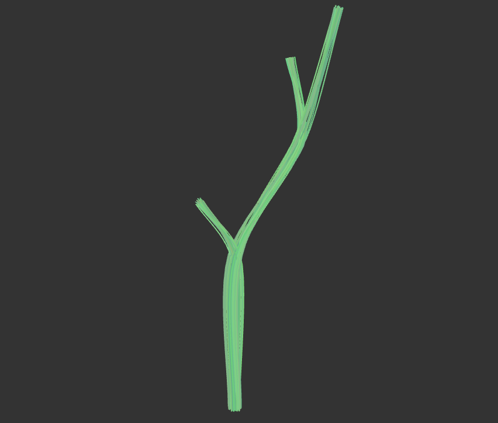
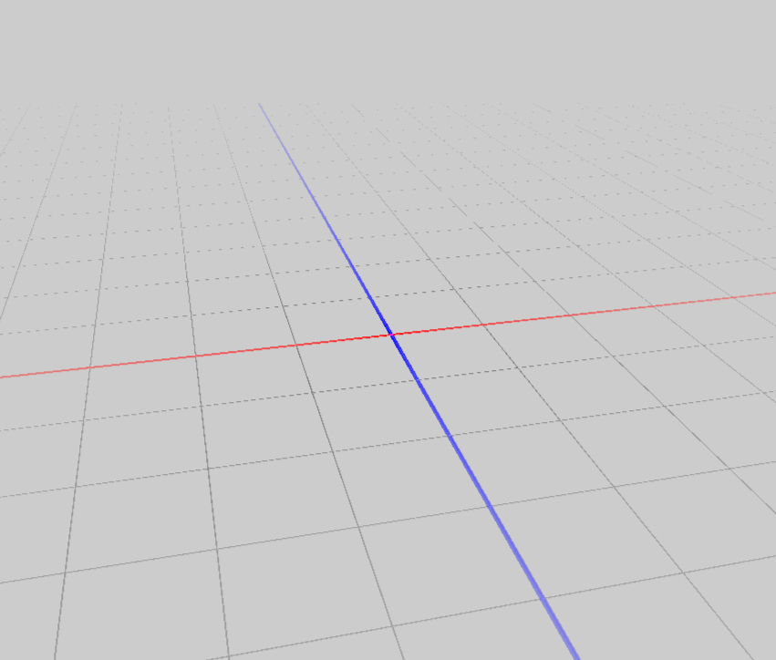

ReSTIR real-time path tracer

Real-time path tracer built from scratch in WebGPU, implementing ReSTIR for efficient many-light sampling with spatiotemporal reuse.
A simple gallery of projects. Click a card to go to the project page (or to its Github repository if there is no webpage for it). The overview, methods and results of each project can be seen on the Github README.
Real-time path tracer built from scratch in WebGPU, implementing ReSTIR for efficient many-light sampling with spatiotemporal reuse.

Wave Function Collapse solver made with WebGPU, featuring multiple control parameters to experiment with the capabilities of the algorithm.

An interactive implementation of Crane et al.'s heat method for computing geodesic distance fields on triangle meshes, developed as coursework for Digital Analysis and Representation of Shapes.

Real-time Gray–Scott reaction–diffusion in OpenGL. CPU finite-difference and GPU fragment-shader ping-pong, built for side-by-side performance comparison.
Depixelization of pixel art through spring simulation. Implementation of the paper "Interactive Depixelization of Pixel Art through Spring Simulation".

A procedural tree modeling framework using strand-based volumetric geometry. Implementation of the paper "Interactive Invigoration: Volumetric Modeling of Trees with Strands".

Exploring different procedural terrain generation methods and evaluating realism & performance. WORK IN PROGRESS!